Urlop okolicznościowy
Każdy pracownik zatrudniony na umowę o pracę może zawnioskować o urlop okolicznościowy. W zależności od okoliczności pracownikowi należy się:
2 dni urlopu okolicznościowego - w razie ślubu pracownika lub urodzenia się jego dziecka albo zgonu i pogrzebu małżonka pracownika lub jego dziecka, ojca, matki, ojczyma lub macochy;
1 dzień urlopu okolicznościowego - w razie ślubu dziecka pracownika albo zgonu i pogrzebu jego siostry, brata, teściowej, teścia, babki, dziadka, a także innej osoby pozostającej na utrzymaniu pracownika lub pod jego bezpośrednią opieką;
Urlop okolicznościowy można wykorzystać w terminie zbliżonym do wydarzenia, które wystąpiło.
-
Krok 1.
Wypełnij pole z datą złożenia wniosku. Należy wpisać datę w którą wniosek został złożony.

-
Krok 2.
Wpisz swoje imię i nazwisko czytelnie - łacińskimi literami w odpowiednim polu zaznaczonym na ilustracji.

-
Krok 3.
Wpisz swój numer ID następnie wpisz nazwę działu.

-
Krok 4.
Zaznacz w odpowiednim polu przez jakiego pracodawcę obecnie pracujesz.

-
Krok 5.
Zaznacz w odpowiednim polu jaki typ urlopu Ciebie interesuje. W tym przypadku zaznacz “Okolicznościowego”.
 -
Krok 6.
Napisz na jaką okoliczność wnioskujesz o urlop okolicznościowy.
 -
Krok 7.
Wpisz datę od której będzie się zaczynać twój urlop okolicznościowy.

-
Krok 8.
Wpisz datę, kiedy skończy się twój urlop okolicznościowy. Należy wpisać ostatni dzień, kiedy jeszcze będziesz przybywać na urlopie.

-
Krok 9.
Wpisz ilość roboczych dni 1 lub 2. Nie wliczaj dni wolnych od pracy.

-
Krok 10.
Podpisz wniosek w prawym dolnym rogu. Nie wymaga się podpisu czytelnego.

-
Krok 11.
Zanieś wniosek do podpisania do swojego przełożonego.